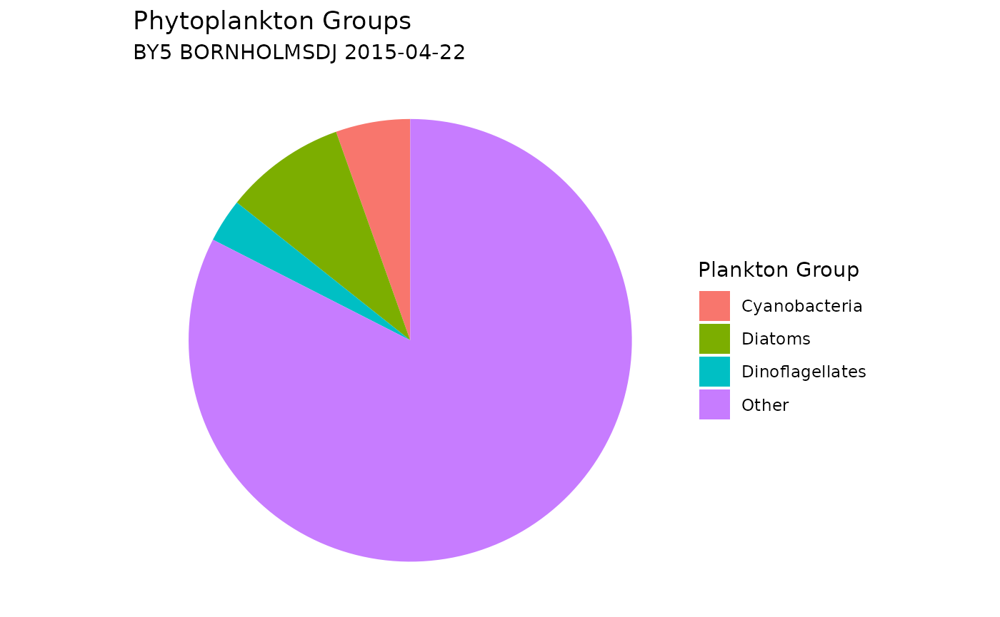

Retrieve Taxonomic Data From WoRMS
Source:vignettes/retrieve_worms_data.Rmd
retrieve_worms_data.RmdWoRMS
The World Register of Marine Species (WoRMS) is a comprehensive
database providing authoritative lists of marine organism names, managed
by taxonomic experts. It combines data from the Aphia database and other
sources like AlgaeBase and FishBase, offering species names, higher
classifications, and additional data. WoRMS is continuously updated and
maintained by taxonomists. In this tutorial, we source the R package worrms
to access WoRMS data for our function. Please note that the authors of
SHARK4R are not affiliated with WoRMS.
Retrieve Data Using SHARK4R
Retrieve Phytoplankton Data From SHARK
Phytoplankton data, including scientific names and AphiaIDs, are downloaded from SHARK. To see more download options, please visit the Retrieve Data From SHARK tutorial.
# Retrieve all phytoplankton data from April 2015
shark_data <- get_shark_data(fromYear = 2015,
toYear = 2015,
months = 4,
dataTypes = c("Phytoplankton"),
verbose = FALSE)Match Taxa Names
Taxon names can be matched with the WoRMS API to retrieve Aphia IDs
and corresponding taxonomic information. The get_worms_records_name
function incorporates retry logic to handle temporary failures, ensuring
that all names are processed successfully.
# Find taxa without Aphia ID
no_aphia_id <- shark_data %>%
filter(is.na(aphia_id))
# Randomly select taxa with missing aphia_id
taxa_names <- sample(unique(no_aphia_id$scientific_name),
size = 10,
replace = TRUE)
# Match taxa names with WoRMS
worms_records <- get_worms_records_name(unique(taxa_names),
fuzzy = TRUE,
best_match_only = TRUE,
marine_only = TRUE,
verbose = FALSE)
# Print result as tibble
tibble(worms_records)## # A tibble: 7 × 28
## name AphiaID url scientificname authority status unacceptreason taxonRankID
## <chr> <int> <chr> <chr> <chr> <chr> <chr> <int>
## 1 Biota 1 http… Biota NA accep… NA 0
## 2 Ulna… NA NA NA NA no co… NA NA
## 3 Unic… NA NA NA NA no co… NA NA
## 4 Dipl… 109515 http… Diplopsalis R.S.Berg… accep… NA 180
## 5 Scri… 109545 http… Scrippsiella Balech e… accep… NA 180
## 6 Pyra… 886274 http… Pyramimonadop… Moestrup… accep… NA 60
## 7 Chry… 146230 http… Chrysophyceae Pascher,… accep… NA 60
## # ℹ 20 more variables: rank <chr>, valid_AphiaID <int>, valid_name <chr>,
## # valid_authority <chr>, parentNameUsageID <int>, kingdom <chr>,
## # phylum <chr>, class <chr>, order <chr>, family <chr>, genus <chr>,
## # citation <chr>, lsid <chr>, isMarine <int>, isBrackish <int>,
## # isFreshwater <int>, isTerrestrial <int>, isExtinct <lgl>, match_type <chr>,
## # modified <chr>Get WoRMS records from AphiaID
Taxonomic records can also be retrieved using Aphia IDs, employing
the same retry and error-handling logic as the get_worms_records_name
function.
# Randomly select ten Aphia IDs
aphia_ids <- sample(unique(shark_data$aphia_id),
size = 10)
# Remove NAs
aphia_ids <- aphia_ids[!is.na(aphia_ids)]
# Retrieve records
worms_records <- get_worms_records(aphia_ids,
verbose = FALSE)
# Print result as tibble
tibble(worms_records)## # A tibble: 10 × 27
## AphiaID url scientificname authority status unacceptreason taxonRankID
## <int> <chr> <chr> <chr> <chr> <lgl> <int>
## 1 148917 https://w… Coscinodiscus C.G. Ehr… accep… NA 180
## 2 495363 https://w… Tripos muelle… Bory de … accep… NA 220
## 3 163624 https://w… Pauliella tae… (Grunow)… unass… NA 220
## 4 148992 https://w… Coscinodiscus… W.Smith,… accep… NA 220
## 5 388485 https://w… Pseudopedinel… Sekiguch… accep… NA 220
## 6 109714 https://w… Alexandrium t… (Lebour)… accep… NA 220
## 7 232546 https://w… Akashiwo sang… (K.Hiras… accep… NA 220
## 8 110152 https://w… Heterocapsa r… (Lohmann… accep… NA 220
## 9 149648 https://w… Aulacoseira i… (O.Mülle… accep… NA 220
## 10 601744 https://w… Katablepharis Skuja, 1… accep… NA 180
## # ℹ 20 more variables: rank <chr>, valid_AphiaID <int>, valid_name <chr>,
## # valid_authority <chr>, parentNameUsageID <int>, kingdom <chr>,
## # phylum <chr>, class <chr>, order <chr>, family <chr>, genus <chr>,
## # citation <chr>, lsid <chr>, isMarine <int>, isBrackish <int>,
## # isFreshwater <int>, isTerrestrial <int>, isExtinct <int>, match_type <chr>,
## # modified <chr>Get WoRMS Taxonomy
SHARK sources taxonomic information from Dyntaxa, which is
reflected in columns starting with taxon_xxxxx. Equivalent
columns based on WoRMS can be retrieved using the add_worms_taxonomy
function.
# Retrieve taxonomic table
worms_taxonomy <- add_worms_taxonomy(aphia_ids,
verbose = FALSE)
# Print result as tibble
tibble(worms_taxonomy)## # A tibble: 10 × 10
## aphia_id scientific_name worms_kingdom worms_phylum worms_class worms_order
## <dbl> <chr> <chr> <chr> <chr> <chr>
## 1 148917 Coscinodiscus Chromista Heterokonto… Bacillario… Coscinodis…
## 2 495363 Tripos muelleri Chromista Myzozoa Dinophyceae Gonyaulaca…
## 3 163624 Pauliella taenia… Chromista Heterokonto… Bacillario… Lithodesmi…
## 4 148992 Coscinodiscus co… Chromista Heterokonto… Bacillario… Coscinodis…
## 5 388485 Pseudopedinella … Chromista Ochrophyta Dictyochop… Pedinellal…
## 6 109714 Alexandrium tama… Chromista Myzozoa Dinophyceae Gonyaulaca…
## 7 232546 Akashiwo sanguin… Chromista Myzozoa Dinophyceae Gymnodinia…
## 8 110152 Heterocapsa rotu… Chromista Myzozoa Dinophyceae Peridinial…
## 9 149648 Aulacoseira isla… Chromista Heterokonto… Bacillario… Aulacoseir…
## 10 601744 Katablepharis Chromista Cryptophyta Cryptophyt… NA
## # ℹ 4 more variables: worms_family <chr>, worms_genus <chr>,
## # worms_species <chr>, worms_hierarchy <chr>Assign Phytoplankton Groups
Phytoplankton data are often categorized into major groups such as Dinoflagellates, Diatoms, Cyanobacteria, and Others. This grouping can be achieved by referencing information from WoRMS and assigning taxa to these groups based on their taxonomic classification, as demonstrated in the example below.
# Subset a few national monitoring stations
nat_stations <- shark_data %>%
filter(station_name %in% c("BY31 LANDSORTSDJ"))
# Randomly select one sample from the nat_stations
sample <- sample(unique(nat_stations$shark_sample_id_md5), 1)
# Subset the random sample
shark_data_subset <- shark_data %>%
filter(shark_sample_id_md5 == sample)
# Assign groups by providing both scientific name and Aphia ID
plankton_groups <- assign_phytoplankton_group(
scientific_names = shark_data_subset$scientific_name,
aphia_ids = shark_data_subset$aphia_id,
verbose = FALSE)
# Print result
tibble(distinct(plankton_groups))## # A tibble: 51 × 2
## scientific_name plankton_group
## <chr> <chr>
## 1 Akashiwo sanguinea Dinoflagellates
## 2 Amphidinium Dinoflagellates
## 3 Amphidinium sphenoides Dinoflagellates
## 4 Aphanizomenon Cyanobacteria
## 5 Aphanocapsa Cyanobacteria
## 6 Aphanocapsa delicatissima Cyanobacteria
## 7 Aphanothece paralleliformis Cyanobacteria
## 8 Attheya septentrionalis Diatoms
## 9 Cylindrotheca closterium Diatoms
## 10 Chaetoceros danicus Diatoms
## # ℹ 41 more rows
# Add plankton groups to data and summarize abundance results
plankton_group_sum <- shark_data_subset %>%
mutate(plankton_group = plankton_groups$plankton_group) %>%
filter(parameter == "Abundance") %>%
group_by(plankton_group) %>%
summarise(sum_plankton_groups = sum(value, na.rm = TRUE))
# Plot a pie chart
ggplot(plankton_group_sum,
aes(x = "", y = sum_plankton_groups, fill = plankton_group)) +
geom_col(width = 1) +
coord_polar(theta = "y") +
labs(
title = "Phytoplankton Groups",
subtitle = paste(unique(shark_data_subset$station_name),
unique(shark_data_subset$sample_date)),
fill = "Plankton Group"
) +
theme_void() +
theme(plot.background = element_rect(fill = "white", color = NA))
You can add custom plankton groups by using the
custom_groups parameter, allowing flexibility to categorize
plankton based on specific taxonomic criteria. Please note that the
order of the list matters: taxa are assigned to the last matching group.
For example: Mesodinium rubrum will be excluded from the Ciliates group
because it appears after Ciliates in the list in the example below.
# Define custom plankton groups using a named list
custom_groups <- list(
"Cryptophytes" = list(class = "Cryptophyceae"),
"Green Algae" = list(class = c("Trebouxiophyceae",
"Chlorophyceae",
"Pyramimonadophyceae"),
phylum = "Chlorophyta"),
"Ciliates" = list(phylum = "Ciliophora"),
"Mesodinium rubrum" = list(scientific_name = "Mesodinium rubrum"),
"Dinophysis" = list(genus = "Dinophysis")
)
# Assign groups by providing scientific name only, and adding custom groups
plankton_groups <- assign_phytoplankton_group(
scientific_names = shark_data_subset$scientific_name,
custom_groups = custom_groups,
verbose = FALSE)
# Add new plankton groups to data and summarize abundance results
plankton_custom_group_sum <- shark_data_subset %>%
mutate(plankton_group = plankton_groups$plankton_group) %>%
filter(parameter == "Abundance") %>%
group_by(plankton_group) %>%
summarise(sum_plankton_groups = sum(value, na.rm = TRUE))
# Plot a new pie chart, including the custom groups
ggplot(plankton_custom_group_sum,
aes(x = "", y = sum_plankton_groups, fill = plankton_group)) +
geom_col(width = 1) +
coord_polar(theta = "y") +
labs(
title = "Phytoplankton Custom Groups",
subtitle = paste(unique(shark_data_subset$station_name),
unique(shark_data_subset$sample_date)),
fill = "Plankton Group"
) +
theme_void() +
theme(plot.background = element_rect(fill = "white", color = NA))
Citation
## To cite package 'SHARK4R' in publications use:
##
## Markus Lindh, Anders Torstensson (2025). SHARK4R: Retrieving,
## Analyzing, and Validating Marine Data from SHARK and Nordic
## Microalgae. R package version 0.1.7.
## https://doi.org/10.5281/zenodo.14169399
##
## A BibTeX entry for LaTeX users is
##
## @Manual{,
## title = {SHARK4R: Retrieving, Analyzing, and Validating Marine Data from SHARK and Nordic Microalgae},
## author = {Markus Lindh and Anders Torstensson},
## year = {2025},
## note = {R package version 0.1.7},
## url = {https://doi.org/10.5281/zenodo.14169399},
## }